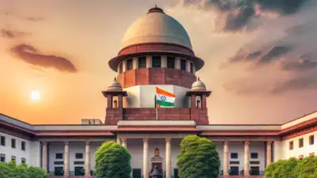
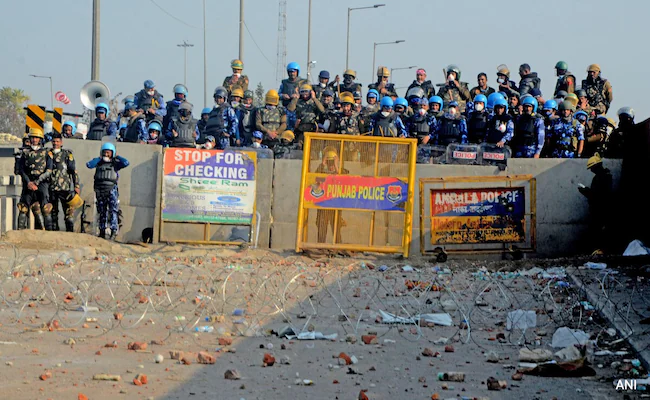

Supreme court interim bail to CM Arvind kejriwal

The Supreme Court on Friday granted interim bail to Delhi chief minister Arvind Kejriwal in the Enforcement Directorate (ED)’s case against him in the excise policy matter, saying he has suffered incarceration for over 90 days and that the issue involves the right to life and liberty of an individual.
Gautam Gambhir

Gautam Gambhir has only worked as a mentor with two IPL franchises—and a professional retirement as late as 2019, how did Gambhir become BCCI's choice as India's new head coach? The popular notion is that his role in helping Kolkata Knight Riders win the IPL after a decade-long wait did the trick. The KKR players and the support staff were vocal about Gambhir's role in creating the perfect team environment. True, but that hardly mattered to the BCCI.
Captain Ayushman Singh's widow recalls last call

"It was love at first sight," recalled Smriti Singh - the wife of late Captain Anshuman Singh who was awarded Kirti Chakra posthumously for the ultimate sacrifice in saving the life of his fellow army men from a fire at Siachen.
26 years old-man found dead in Hotel
A 26-year-old man was found dead in a hotel room in Delhi on Thursday morning, a few hours after he had checked in along with this companion who was later arrested by the Delhi police, officials said.
Murder of Journalist
New Delhi on supreme court monday issued notice to the four convicts in the murder of journalist Soumya Vishwanathan in 2008 following Delhi Police's appeal challenging Delhi High court's order suspending the life sentences and granting interim bail to the four men.
Shiv swna MP Deora urged the Maharashtra cheif secretary

Shiv Sena MP Milind Deora on Thursday urged the Maharashtra chief secretary to hold an ‘impartial' probe into allegations against a probationary IAS officer, accused of demanding a private cabin and staff, despite only being a trainee.
Delhi University clarifiedthat LLB students will not taught Manusmriti

Delhi University Vice-Chancellor Yogesh Singh has clarified that LLB students will not be taught 'Manusmriti', an ancient Hindu legal text, after a controversy erupted over reports that a proposal to teach the manuscript in undergraduate courses was placed for approval. In a video statement, Singh said the Faculty of Law on Thursday suggested changes in the paper titled 'Jurisprudence' and their suggestions included readings on 'Manusmriti', which the university rejected.
Supreme court declined to entertain public interest
The supreme court friday declined to entertain a public ineterst litigation requesting an investigation into the Hathras stampade,which calimed 121 lives.
6 Indians missing after a landslide
NEW DELHI: Over 60 people, including 6 Indians, have gone missing after a landslide swept away two passenger buses along the Madan-Ashrit highway in central Nepal early Friday morning. Officials at the scene said the search and rescue operation is being obstructed by the swollen Trishuli River. Indradev Yadav, chief district officer of Chitwan, confirmed, "As per the preliminary information both the buses were carrying a total of 63 people, including the bus drivers.
Lock-down at shambhu border
New Delhi: The Supreme Court has asked tough questions of the Haryana government after a High Court order this week directing the re-opening of the Shambhu border crossing, which has been locked down since February to block farmers protesting the centre's agricultural policies from marching on Delhi.